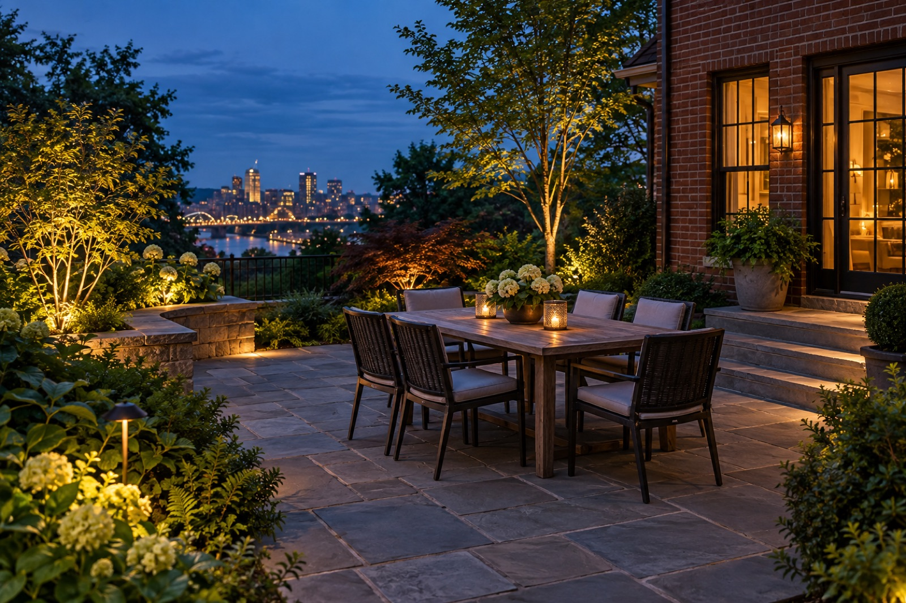

Integrated versus freestanding fixtures for Pittsburgh-area homes
Different fixtures and approaches can solve similar problems with different visual results. These comparisons focus on what a homeowner will actually see and experience.
Integrated fixtures can disappear into a wall or step, while freestanding ones offer different flexibility. The best answer depends on the architecture, planting, grade, and the places from which you see the scene each evening. Begin by naming the effect you want, then consider what fixture placement would create it.

What to notice on your property
Consider access and future adjustments. Walk the area after dark and note where you approach, pause, or look through a window. A design that appears balanced in a daytime drawing may feel different at night because surrounding areas fall into shadow.
Notice surfaces that can reflect or absorb light, nearby trees that may grow into a beam, and any view toward a neighbor. These details help make the finished scene comfortable as well as beautiful.
How to discuss the design
Show the places you want to use and the view you want to improve. Ask what each proposed light is doing in the composition. For integrated versus freestanding fixtures, that conversation should connect the specific feature with the house, the garden, and any route through the space.
Consider how the scene may change over time. Plants grow, seasons shift, and fixtures sometimes need to be adjusted. A plan with service access in mind is easier to keep looking intentional.
A practical next step
Take a few photographs from the street, the main route, and the most important indoor view. Share them with a short description of what currently feels dark, too bright, or unfinished. That gives a lighting designer a more useful starting point than a fixture count alone.
Explore more lighting comparisons guides, review Lumascapes' services, or tell us about your property.